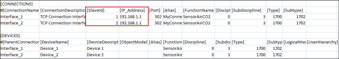
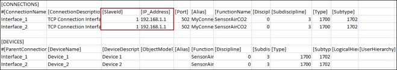
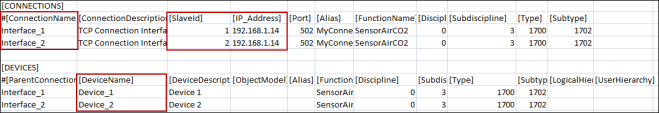
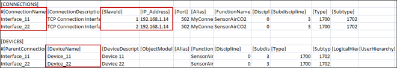

Points to Consider Before Importing the CSV File
This section includes important points to consider before importing the CSV file.
Multiple Modbus Interfaces Under Same Gateway
- In a Modbus network, every device must have a Slave Id under a given IP address. The Slave Id must be unique.
- If two or more Modbus interfaces have the same IP address, this means they are connected to the same gateway. In this case, the Slave Ids must be unique. However, the same Slave Id can be repeated for interfaces that have different IP addresses.
- If two or more Modbus interfaces have the same IP address, as well as the same Slave Id, then the Modbus Importer will issue an error during the import and skip importing the affected device and its points.
- There is no representation of the gateway object in the System Browser tree. Therefore, there is no such gateway object in the hierarchy above the Modbus TCP interface if they belong to the same gateway.


Effect of Duplicate Slave ID During an Import
Assume that you have imported the following CSV file. This file contains two interfaces with the same IP address, but different Slave Ids. The protocol interprets these to be devices under the same gateway.
This CSV file will be imported without errors, creating the corresponding instances in the system.

Assume the import was successful, and you try to import a CSV file with the same IP address and Slave Ids, but different Interface and Device names (highlighted below). The importer allows you to import this CSV as well.

Interface_1 from the previous CSV and Interface_11 from the following CSV now have the same IP address and Slave Id. Since they have the same IP address, it indicates they are under the same gateway; therefore, they cannot have a duplicate Slave Id. However, they have the same Slave Id of 1. As a result, during runtime, only one of these interfaces can connect to the driver, while the other remains disconnected.
Therefore, when importing new instances in the system, the same Slave Id must not be duplicated under the same gateway.